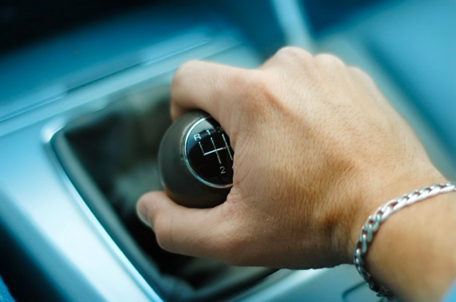

Shifting:

Shifting a manual transmission into gear can be completed in three easy steps:
Step 1: Depress (push in) the Clutch Pedal.
Step 2: Shift the Gear Box into First Gear or
Reverse.
Step 3: Slowly release the Clutch Pedal and evenly apply the
accelerator (gas pedal) as the transmission locks into gear.